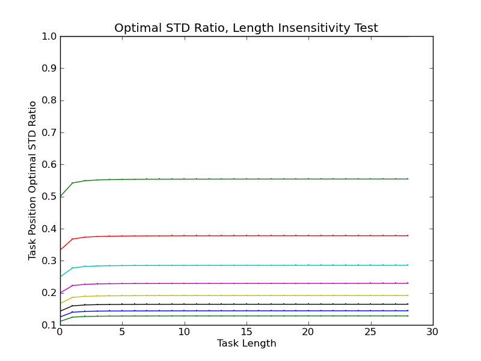

Mtg Notes
STATUS:
STATUS:
[caninoko@gateway]:[7]:[/mnt/scratch/caninoko/065]:$ mkdir populations/; for i in *_??????; do echo $i; if [ ! -e $i.tar.gz ] ; then mkdir $i/data/populations/; mv $i/data/detail* $i/data/populations/; mv $i/data/populations/ ./populations/$i; tar -cvf $i.tar.gz $i ; else : ; fi; done rosiec@atlantis:~/research/Devolab Research/evolution_of_modularity/raw_data/065$ scp caninoko@gateway.hpcc.msu.edu:/mnt/scratch/caninoko/063/*.tar.gz ./ rosiec@atlantis:~/research/Devolab Research/evolution_of_modularity/raw_data/065$ for i in *.tar.gz; do tar -xvf $i; done; rm *.tar.gz
STATUS:
LOG:
rosiec@atlantis:~/research/Devolab Research/evolution_of_modularity/raw_data/065$ ./analyze.bash 1 rosiec@atlantis:~/research/Devolab Research/evolution_of_modularity/raw_data/065$ ./analyze.bash 2 rosiec@atlantis:~/research/Devolab Research/evolution_of_modularity/raw_data/065$ ./analyze.bash 3 ; ./analyze.bash 4; ./analyze.bash 5; ./analyze.bash 6; ./analyze.bash 7
STATUS:
[caninoko@dev-amd09]:[2]:[/mnt/scratch/caninoko/065]:$ screen -dmS c_i bash -c 'for i in c*_i*_??????; do echo $i; cd $i/data/; rm cclade_counts.dat*; python ~/scripts/extract_clade_counts_from_population_dumps.py -v -o cclade_counts.dat -m 15 dominant.dat* ../../populations/$i/detail-?.spop.gz ../../populations/$i/detail-??.spop.gz ../../populations/$i/detail-???.spop.gz ../../populations/$i/detail-????.spop.gz ../../populations/$i/detail-?????.spop.gz ; cd ../../; done;' [caninoko@dev-amd09]:[2]:[/mnt/scratch/caninoko/065]:$ screen -dmS n_i bash -c 'for i in n*_i*_??????; do echo $i; cd $i/data/; rm cclade_counts.dat*; python ~/scripts/extract_clade_counts_from_population_dumps.py -v -o cclade_counts.dat -m 15 dominant.dat* ../../populations/$i/detail-?.spop.gz ../../populations/$i/detail-??.spop.gz ../../populations/$i/detail-???.spop.gz ../../populations/$i/detail-????.spop.gz ../../populations/$i/detail-?????.spop.gz ; cd ../../; done;' [caninoko@dev-amd09]:[2]:[/mnt/scratch/caninoko/065]:$ screen -dmS p_i bash -c 'for i in p*_i*_??????; do echo $i; cd $i/data/; rm cclade_counts.dat*; python ~/scripts/extract_clade_counts_from_population_dumps.py -v -o cclade_counts.dat -m 15 dominant.dat* ../../populations/$i/detail-?.spop.gz ../../populations/$i/detail-??.spop.gz ../../populations/$i/detail-???.spop.gz ../../populations/$i/detail-????.spop.gz ../../populations/$i/detail-?????.spop.gz ; cd ../../; done;' [caninoko@dev-amd09]:[2]:[/mnt/scratch/caninoko/065]:$ screen -dmS c_s bash -c 'for i in c*_s*_??????; do echo $i; cd $i/data/; rm cclade_counts.dat*; python ~/scripts/extract_clade_counts_from_population_dumps.py -v -o cclade_counts.dat -m 15 dominant.dat* ../../populations/$i/detail-?.spop.gz ../../populations/$i/detail-??.spop.gz ../../populations/$i/detail-???.spop.gz ../../populations/$i/detail-????.spop.gz ../../populations/$i/detail-?????.spop.gz ; cd ../../; done;' [caninoko@dev-amd09]:[2]:[/mnt/scratch/caninoko/065]:$ screen -dmS n_s bash -c 'for i in n*_s*_??????; do echo $i; cd $i/data/; rm cclade_counts.dat*; python ~/scripts/extract_clade_counts_from_population_dumps.py -v -o cclade_counts.dat -m 15 dominant.dat* ../../populations/$i/detail-?.spop.gz ../../populations/$i/detail-??.spop.gz ../../populations/$i/detail-???.spop.gz ../../populations/$i/detail-????.spop.gz ../../populations/$i/detail-?????.spop.gz ; cd ../../; done;' [caninoko@dev-amd09]:[2]:[/mnt/scratch/caninoko/065]:$ screen -dmS p_s bash -c 'for i in p*_s*_??????; do echo $i; cd $i/data/; rm cclade_counts.dat*; python ~/scripts/extract_clade_counts_from_population_dumps.py -v -o cclade_counts.dat -m 15 dominant.dat* ../../populations/$i/detail-?.spop.gz ../../populations/$i/detail-??.spop.gz ../../populations/$i/detail-???.spop.gz ../../populations/$i/detail-????.spop.gz ../../populations/$i/detail-?????.spop.gz ; cd ../../; done;'
[caninoko@dev-amd09]:[2]:[/mnt/scratch/caninoko/065]:$ for i in *_??????; do echo $i; cp $i/data/cclade* clade_files/$i"_cclade_counts.dat" ; done
BEACON Mtg Notes:
STATUS:
STATUS:
rosiec@atlantis:~/research/Devolab Research/evolution_of_modularity/raw_data/043_Selected_Combinatoric_Combinations$ for i in control*_??????; do if [ ! -e $i.tar.gz ] ; then echo "Compressing $i" ; /usr/gnu/bin/tar --exclude=*tasksites*html --exclude=*lineage*html --exclude=.DS_Store* --exclude=.AppleDouble* -Wcvf $i.tar $i; if [ $? == 0 ] ; then echo " TAR OK - $i"; gzip -c $i.tar > $i.tar.gz ; gzip -t $i.tar.gz; if [ $? == 0 ] ; then echo " GZIP OK - $i"; rm $i.tar ; else echo " GZIP FAILED - $i" ; rm $i.tar.gz ; fi ; else echo " TAR FAILED - $i"; rm $i.tar ; fi; else echo "Skipping $i"; fi; done
STATUS:
rosiec@malp:~/Desktop/tmp_cladeogram$ python /Volumes/rosiec-1/research/Devolab\ Research/scripts/cladeogram/plot_cclade.py -p ~/Desktop/tmp_cladeogram/control_separated__by_parent.png control_separated_650001_cclade_counts.dat.gz control_separated_650001_combined.spop.gz 3600
Relative Fitness by Parent.
Figure 1 - Cladeogram - Control, Separated Ancestr
Figure 2 - Cladeogram - No Reward, Separated Ancestor
Figure 2 - Cladeogram - Punish, Separated Ancestor
Figure 4 - Cladeogram - Control, Intertwined Ancestor
Figure 5 - Cladeogram – No Reward, Intertwined Ancestor
Figure 6 - Cladeogram - Punish, Intertwined Ancestor